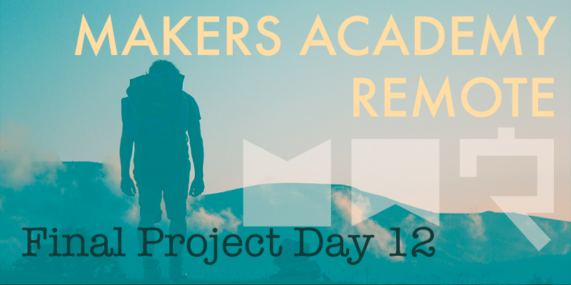

Ominously It's April Fools' day here in the UK, and after eleven long weeks our graduation day has finally arrived. The public presentations of our final projects took place at 4:30pm today, although we needed to get everything ready for a practice run through of the presentations at 2:30pm.
Broken maps
As you might imagine today was a very busy, all hands on deck kind of day. Only hours before the practice run through was due we discovered that the Google maps functionality that was working so well before had suddenly stopped working properly today. A lot of investigation was needed before we discovered the cause of the problem, that an incorrect merge conflict from the previous day had messed with our API code. Of course thorough test coverage would usually avoid exactly this kind of problem from going unnoticed, however parts of our Google maps functionality had to go untested, because Google maps functionality can be a difficult thing to test for. This decision was taken with the help of our coach Sam, who told us that the majority of the functionality will have been tested by Google already, and the difficulty in trying to test it ourselves wouldn't be worth the trouble right now.
Time to practice
After spending some time ensuring that our README was up to date and included our Travis CI and Coveralls build badges (we really wanted to show off our test coverage, which was now up to 99%) it was time for the practice run through. We'd previously volunteered to present first, so that we could get our presentation out of the way and enjoy the rest of the event, and so we were called upon first for the practice run.
Everybody from our cohort was assembled within a group Zoom meeting that acted as our ‘green room', and when called upon we had to drop into a Google Hangout that was being live streamed on YouTube. We made our way to the Hangout, and were ready for action. 3..2..1..
FAIL! So much went wrong with our practice run through that Sam called an early end to it after only 1 minute. The plan was for me to share the keynote presentation on my screen while the three of us narrated, but for some bizarre reason I was completely unable to share my screen within the Hangout while the keynote was showing full screen. After several failed attempts to share my screen, and about thirty solid seconds of me declaring that I didn't know what the problem was, Sam sent us away to fix things up.
We felt bad about our apparent lack of preparation, at least until we began to watch the other group's practice runs. So many technical problems occurred that it was beginning to become embarrassing. Our cohort is by far the largest remote cohort that Makers Academy has ever run, and it appeared that the live broadcasting setup wasn't going to accommodate all of us without problems. The issues, including failed screen shares and missing audio, were so frequent that Sam even considered cancelling the live broadcast and uploading pre-recorded videos instead.
Time to record
As soon as Sam mentioned pre-recorded video our group sprang into action. There was no way that we were going to risk looking this unprepared if there was another option. We decided to drop out of watching the rest of the practice sessions to spend the remaining time before the live event recording our entire presentation ahead of time. We didn't care whether the other groups wanted to risk performing live or not, we'd seen enough of what can and probably will go wrong, and we didn't want to look stupid.
After a handful of takes we managed to produce a full recorded run through of our presentation with minimal mistakes, and figured that it was just about as good as we could make it with the little time remaining. When the real live broadcast began and we were called upon to present first, we simply needed to play our recording. Pre-recording our presentation in this way did minimise our concerns leading up to the event, but it also brought with it a new set of concerns. For a series of reasons which are too boring to explain we had to play back the video on the machine of the group member who had the worst internet connection of the three of us by quite some way, so throughout the presentation we watched in the hope that the internet connection would hold up until the video had finished playing.
Thankfully it did, our presentation went well, and surprisingly so did all of the other group's presentations, and aside from a handful of small human error mistakes like people forgetting their lines or talking over each other, the event ran without a hitch for everybody. Once our video had played we were able to sit back and enjoy the rest of the event, and after focusing only on our our small group for the past two weeks it was great to see what the rest of our cohort had been up to during the final project. Every group managed to present a professionally built MVP, and we were pleased to see that our project held up well against the others, considering our smaller group size. Given a little more time every project that was presented could have been turned into a polished product capable of serving a large audience, and for a group of people who knew almost nothing about coding only a few months ago, I think that's pretty amazing.
All done!
Now that the presentations have finished we're all officially Makers Academy graduates. The main learning content of the course is now complete, and all that remains is hiring week, which at this point in time I don't know much about.
As for this weekend, tomorrow, April 2nd, will be my first day off since January 17th. I have a cinema trip and a meal planned with my wife, and I'm not entirely sure if I can remember how to function without a laptop in front of me. After such an intensive course it's going to be an interesting challenge adjusting back to normal life.